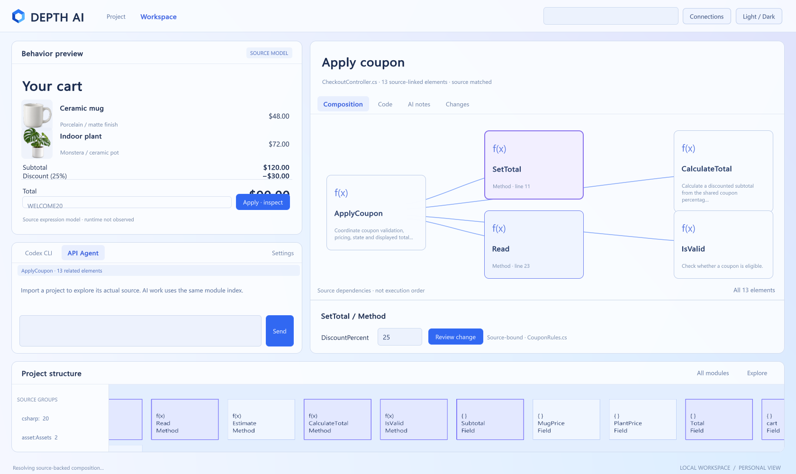
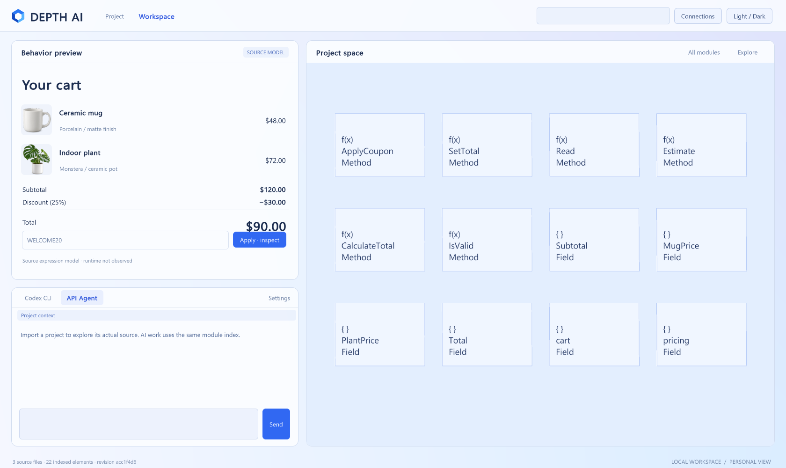

유리 재질, 입체 깊이, 역할별 아이콘, 읽기 쉬운 정면 구성, 아래쪽 프로젝트 탐색대.


단순 평면 패널과 함수 기호에 치우쳤고 프리뷰 간격 문제도 남았습니다. 사용자가 원한 모습과 큰 차이가 있습니다.

밀도·빛·테두리를 줄여야 합니다. 그래픽 품질과 깊이 자체를 없애라는 요청은 아닙니다.


아직 레퍼런스의 공간·재질 수준에 미달합니다.
현재 구현은 레퍼런스 재현에 실패한 상태이며 승인된 완성 디자인이 아닙니다. 왼쪽의 분위기·재질·구성·아이콘·밀도를 실제 네이티브 화면에 구현하는 것이 다음 작업입니다. 빌드와 기능 테스트 통과를 시각적 완성으로 바꾸어 설명하지 않습니다.

